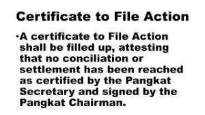
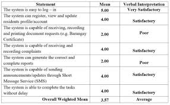

Our Services
- File Compliant 
- Request Documents 

Barangay is the lowest political adminis- trative unit of the Philippine government. Together with the municipal and provincial government, the barangay is considered the fundamental base of the Philippine national government. The term barangay dates back to precolonial times.Paclasan Municipality of Roxas Province of Oriental Mindoro Paclasan , formerly Poblacion, is a barangay in the municipality of Roxas, in the province of Oriental Mindoro. Its population as determined by the 2020 Census was 5,283. This represented 8.98% of the total population of Roxas.
LPaclasan Municipality of Roxas Province of Oriental Mindoro.Paclasan, formerly Poblacion, is a barangay in the municipality of Roxas, in the province of Oriental Mindoro. Its population as determined by the 2020 Census was 5,283. This represented 8.98% of the total population of Roxas.
If you have any questions or concerns, feel free to reach out to us:
Email: info@barangay.com
Phone: 123-456-7890